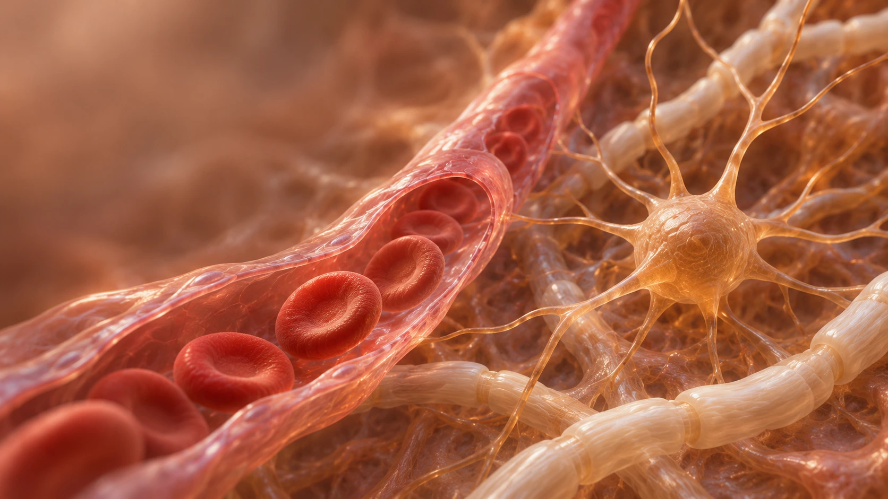

КРОВОСНАБЖЕНИЕ
Кровь приносит кислород
Его переносит кровь внутри капилляра.
Капилляр
Эритроциты остаются в сосуде.
Об этой учебной сцене
Метки условно обозначают кислород. Их размер, количество и траектории не являются молекулярной симуляцией. Кровь остаётся внутри сосуда, кислород проходит через его стенку в окружающую ткань. Разрез показан для объяснения устройства.
Это отдельный контрольный вариант. Он не устанавливает диагноз и не является результатом обследования пациента. Анатомическая точность и окончательные медицинские формулировки требуют согласования с Юлией Олеговной.
Управление: пауза, стрелки для выбора состояния. Возврат к предыдущему состоянию показывает учебный кадр, а не обращает физиологический процесс. При включённом уменьшении движения доступны статические состояния.